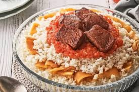

Fatta – Egyptian Rice & Meat Feast
Home

A celebration dish that blends crispy bread, fluffy rice, and tender meat soaked in garlicky vinegar broth.
Fatta is one of Egypt’s most iconic feast dishes, often prepared during Eid and special family occasions.
It combines layers of toasted baladi bread, fragrant rice, and slow-cooked meat, all brought together with a tangy garlic-vinegar sauce.
The result is a comforting, hearty meal that balances crunch, softness, and rich flavor in every bite.
Ingredients:-
- 500 g beef or lamb, cut into chunks
- 2 cups Egyptian rice
- 2 pieces baladi bread (or pita), cut into small squares
- 6 cloves garlic, minced
- 1/4 cup white vinegar
- 2 tablespoons tomato paste
- 3 tablespoons ghee or butter
- 1 teaspoon cumin
- 1 teaspoon salt (or to taste)
- 1/2 teaspoon black pepper
- 4 cups beef broth (from boiling the meat)
Steps:-
- Boil the meat: Cook the beef or lamb with onions, salt, pepper, and bay leaves until tender. Reserve the broth for later.
- Toast the bread: In a pan, fry the baladi bread pieces in ghee or butter until golden and crispy. Set aside.
- Cook the rice: Prepare the rice separately in ghee or butter until fluffy and well done.
- Make the sauce: Sauté minced garlic in ghee, then add vinegar and tomato paste to form a rich, tangy base.
- Blend the flavors: Mix part of the reserved broth into the garlic-vinegar sauce to thin and infuse flavor.
- Assemble layers: Place crispy bread at the bottom of a dish, pour some broth to soften it, then add a layer of rice.
- Add the meat: Arrange the cooked meat pieces evenly over the rice layer.
- Finish and serve: Drizzle the remaining garlic-vinegar sauce on top just before serving for a perfect final touch.